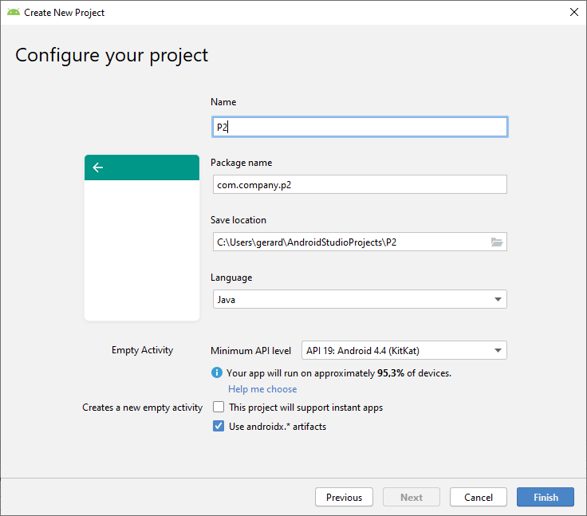
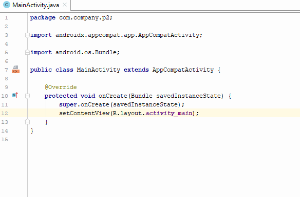
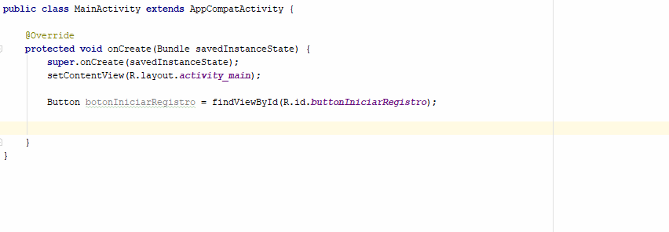
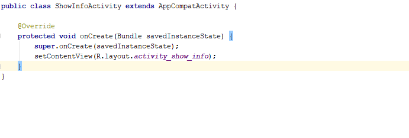

El objetivo de esta práctica es aprender a iniciar Activities. También aprenderás cómo pasar información de una Activity a otra.
Desarrollarás una aplicación para rellenar un formulario de registro. La app constará de tres pantallas.
- En la primera habrá un botón "INICIAR REGISTRO" que nos llevará a la segunda pantalla.
- En la segunda pantalla estará el formulario de registro, donde el usuario introducirá sus datos. Cuando pulse el botón "REGISTRAR" irá a la última pantalla.
- En la última pantalla se mostrarán los datos introducidos.

Encontrarás el código completo de la aplicación aquí: https://github.com/gerardfp/P2
Selecciona "Empty Activity" como plantilla para la MainActivity.

Introduce los siguientes datos de configuración del proyecto.

La Activity Principal contendrá un botón con el texto "Iniciar Registro", que nos llevará a la siguiente pantalla, la que pedirá los datos personales.
En primer lugar añadiremos el Button en el layout de la MainActivity. (Más adelante haremos que que al hacer click en dicho botón se inicie la siguiente Activity).
Añadir un Button al Layout de la MainActivity
Abre el archivo activity_main.xml, que se encuentra en el directorio res/layout/

Este archivo XML define el layout de la activity. Por defecto, contiene el TextView "Hello World".
Reemplaza el contenido del archivo XML con lo siguiente:
<?xml version="1.0" encoding="utf-8"?>
<androidx.constraintlayout.widget.ConstraintLayout xmlns:android="http://schemas.android.com/apk/res/android"
xmlns:app="http://schemas.android.com/apk/res-auto"
xmlns:tools="http://schemas.android.com/tools"
android:layout_width="match_parent"
android:layout_height="match_parent"
tools:context=".MainActivity">
<Button
android:id="@+id/button"
android:layout_width="wrap_content"
android:layout_height="wrap_content"
android:text="Button"
app:layout_constraintBottom_toBottomOf="parent"
app:layout_constraintLeft_toLeftOf="parent"
app:layout_constraintRight_toRightOf="parent"
app:layout_constraintTop_toTopOf="parent" />
</androidx.constraintlayout.widget.ConstraintLayout>Hemos reemplazado el TextView que viene por defecto con un Button.
Si cambias a la pestaña Design, deberías ver una previsualización del layout como ésta:

Cambiemos el texto que aparece en el botón por el de "INICIAR REGISTRO". Para ello solamente debes modificar el atributo android:text (en el XML o en Diseño).
Recursos String
Es una buena práctica añadir todas las cadenas de texto que tenga nuestra aplicación en el fichero de recursos strings.xml (para facilitar las traducciones, por ejemplo).
Para hacerlo podemos hacer uso del refactoring de IntelliJ. Tan simple como hacer Alt + Intro:

Solamente hay que darle un nombre al recurso y automáticamente se creará la definición de este recurso en el archivo strings.xml:

Por ahora únicamente tenemos una aplicación que muestra una Activity (una sola pantalla) con un botón.
Vamos a añadir algo de código en MainActivity para que se inicie una nueva activity cuando el usuario haga clic en el botón "INICIAR REGISTRO".
El comportamiento de una Activity se programa en el archivo Java de dicha Activity. Para hacer que el botón de la MainActivity haga algo, debemos añadir el código Java en el archivo MainActivity.java.
Abre el archivo MainActivity.java:

Lo que haremos cuando se inicie la MainActivity, es "activar" el botón de forma que cuando se haga clic en él, nos lleve a la siguiente activity. Es decir, cuando se inicie la MainActivity haremos que se establezca la acción que se ha de realizar cuando se haga clic en el botón.
Para añadir un comportamiento mediante código Java a un elemento definido en el layout XML (com en este caso, el botón), el primer paso es "recuperar" el elemento. Para ello usaremos el método findViewById().
Recuperar el botón con findViewById():

En este código hemos usado el método findViewById(), al cuál le hemos pasado el identificador del botón que habíamos indicado en el XML, y hemos guardado el botón en la variable botonIniciarRegistro.
De esta forma, la variable botonIniciarRegistro hace referencia al botón con el id button del layout activity_main.xml

En este caso en el que solo hay un botón, no importa demasiado el identificador que se le asigne, pero a medida que una aplicación va creciendo es importante asignar identificadores que "de verdad" identifiquen al elemento.
Para cambiar el id de un elemento, utiliza la refactorización:
Pongámosle un identificador más adecuado al botón. Sitúate encima del identificador y presiona SHIFT + F6 (o ve a Refactor > Rename):

Añadir un Listener al bóton:
Una vez tenemos la referencia al botón, podemos especificar la acción que se debe realizar al hacer click sobre él. Esto se hace mediante listeners. (Más adelante veremos con profundidad los listeners).
Para añadir un listener a un botón que responda al click usamos el método setOnClickListener(), al cuál le pasaremos un objeto View.OnClickListener. En este objeto estará definido el método que se ejecutará cuando el usuario haga click en el botón:

De esta forma hemos añadido un OnClickListener al botón. Lo que programemos dentro del método onClick() de este listener se ejecutará cuando se haga click en el botón.
Para iniciar otra Activity, se usa un objeto de la clase Intent.
Hay que crear un objeto de esta clase especificando la Activity que queremos iniciar, y luego pasarle el objeto Intent al método startActivity().
- Construir el Intent:

- Llamar al método
startActivity()y pasarle el intent:

El método startActivity() inicia una instancia de la clase RegisterActivity , especificada por el Intent. Ahora tienes que crear esta clase.
Hemos hecho en dos pasos la acción de abrir una Activity. Primero hemos creado el Intent, y después se lo hemos pasado a startActivity(). Se podría haber hecho en una sola línea así:
startActivity(new Intent(MainActivity.this, RegisterActivity.class));- En la ventana del Proyecto, haz clic en la carpeta de la
appy seleccionaNew>Activity>Empty Activity. - En la ventana Configurar Actividad, escribe
RegisterActivitypara el Nombre de Actividad y haz clic en Finalizar

Cuando creas una Activity de esta manera, Android Studio automáticamente hace tres cosas:
- Crea la clase
RegisterActivity.javacon la implementación requerida del métodoonCreate(). - Crea el archivo de layout
activity_register.xml - Agrega el elemento
<Activity>requerido enAndroidManifest.xml.
Si ejecutas la aplicación y haces clic en el botón INICIAR REGISTRO de la primera actividad, la segunda actividad se inicia, pero está vacía. Esto es porque la segunda actividad utiliza un Layout vacío predeterminado proporcionado por la plantilla.

Ahora modificaremos la segunda actividad para añadir el formulario de registro. A modo de ejemplo pediremos el nombre, email, telefono y password.
Abre el archivo de layout de la RegisterActivity, activity_register.xml.
Agrega los campos de texto al layout:
- Si lo haces en modo Diseño, agrega un PlainText, un E-mail, un Phone y un Password. Y también un botón que ponga "REGISTRAR". Recuerda poner unos identificadores adecuados a cada elemento.
- Si lo haces en modo Texto, simplemente copia y pega este código XML:
<?xml version="1.0" encoding="utf-8"?>
<LinearLayout xmlns:android="http://schemas.android.com/apk/res/android"
android:layout_width="match_parent"
android:layout_height="match_parent"
android:orientation="vertical">
<EditText
android:id="@+id/userName"
android:layout_width="match_parent"
android:layout_height="wrap_content"
android:inputType="textPersonName"
android:hint="Name" />
<EditText
android:id="@+id/userEmail"
android:layout_width="match_parent"
android:layout_height="wrap_content"
android:inputType="textEmailAddress"
android:hint="Email"/>
<EditText
android:id="@+id/userPhone"
android:layout_width="match_parent"
android:layout_height="wrap_content"
android:inputType="phone"
android:hint="Phone"/>
<EditText
android:id="@+id/userPassword"
android:layout_width="match_parent"
android:layout_height="wrap_content"
android:inputType="textPassword"
android:hint="Password"/>
<Button
android:id="@+id/botonRegistrar"
android:text="REGISTRAR"
android:layout_width="match_parent"
android:layout_height="wrap_content"/>
</LinearLayout>Hemos añadido 4 campos de texto y un botón. Todos ellos los hemos puesto dentro de un LinearLayout.
Veamos algunos de los atributos:
LinearLayout
android:orientation="vertical"hace que los elementos que estan dentro del layout se dispongan uno debajo de otro.
EditText
android:layout_width="match_parent"hace que el EditText tenga la misma anchura que su elemento padre (el LinearLayout).android:inputType="textEmailAddress"hace que el teclado que aparece al ponerse sobre el EditText tenga la tecla@android:inputType="phone"hace que el teclado que aparece al ponerse sobre el EditText se numéricoandroid:inputType="textPassword"hace que el texto que se introduce en el EditText quede ocultado.android:hinthace que aparezca en gris el titulo del campo, el cual desaparece cuando el usuario introduce texto.
Ha quedado definido el layout de la activity de registro. Si abrimos la applicación veremos algo así:

Evidentemente, al hacer click al botón, éste no responderá, ya que no hemos programado su comportamiento.
Cuando el usuario pulse REGISTRAR, la acción a llevar a cabo tiene que ser: recoger los datos introducidos y enviarlos a la siguiente pantalla (activity) para que los muestre. (Habitualmente, en un aplicación lo normal sería guardar estos datos en una base de datos. Lo veremos más adelante).
Los pasos a seguir serán pues estos:
- Recuperar desde código Java el
botonRegistrar - Añadir un listener al botón
- En la acción del listener poner el código que recoja los datos introducidos en los datos, inicie una nueva pantalla y le envíe los datos.
Recuperar el botón con findViewById()
Parecido al que hemos hecho con el botonIniciarRegistro el código será este:
Button botonRegistrar = findViewById(R.id.botonRegistrar);
Añadir un listener
Igual que con el botonIniciarRegistro:
botonRegistrar.setOnClickListener(new View.OnClickListener() {
@Override
public void onClick(View view) {
}
});
Recoger los datos de los campos
Tenemos que obtener los Strings que el usuario ha introducido en los campos (nombre, email, telefono y password).
Para ello, primero recuperamos cada campo con findViewById() y luego extraemos el String de cada uno de ellos.
- Recuperar los campos con
findViewById()
EditText editTextUserName = findViewById(R.id.userName);
EditText editTextUserEmail = findViewById(R.id.userEmail);
EditText editTextUserPhone = findViewById(R.id.userPhone);
EditText editTextUserPassword = findViewById(R.id.userPassword);
- Extraer los Strings de los campos de texto
Para extraer los Strings de los campos de texto usaremos los métodos getText().toString():
String userName = editTextUserName.getText().toString();
String userEmail = editTextUserEmail.getText().toString();
String userPhone = editTextUserPhone.getText().toString();
String userPassword = editTextUserPassword.getText().toString();
Para iniciar la siguiente pantalla (la que muestra los datos de registro) crearemos un Intent:
Intent intent = new Intent(RegisterActivity.this, ShowInfoActivity.class);
Para passarle los Strings a la ShowInfoActivity, en Android se hace poniendo esos datos en el Intent con el método putExtra().
Habrá que poner cada String, asignándole un identificador a cada uno.
intent.putExtra("USER_NAME", userName);
intent.putExtra("USER_EMAIL", userEmail);
intent.putExtra("USER_PHONE", userPhone);
intent.putExtra("USER_PASSWORD", userPassword);
Una vez construido el Intent ya se lo podemos pasar al método startActivity(), el cual se encargará de iniciar la ShowInfoActivity pasándole el Intent con los datos que hemos puesto.
startActivity(intent);
Por último, nos queda crear la ShowInfoActivity, que recogerá los datos que la RegisterActivity ha puesto en el Intent, y los mostrará en pantalla.
Para crear la Activity, de nuevo nos ponemos sobre la carpeta app y seleccionamos New > Activity > Empty Activity.
En el campo "Activity Name" escribimos ShowInfoActivity.
En el layout de la ShowInfoActivity (activity_show_info.xml), pondremos 4 TextView para mostrar el texto correspondiente a los datos de registro.
<?xml version="1.0" encoding="utf-8"?>
<androidx.constraintlayout.widget.ConstraintLayout xmlns:android="http://schemas.android.com/apk/res/android"
xmlns:app="http://schemas.android.com/apk/res-auto"
xmlns:tools="http://schemas.android.com/tools"
android:layout_width="match_parent"
android:layout_height="match_parent"
tools:context=".ShowInfoActivity">
<LinearLayout
android:layout_width="match_parent"
android:layout_height="match_parent"
android:orientation="vertical">
<TextView
android:layout_width="match_parent"
android:layout_height="wrap_content"
android:text="Registro completado"
android:textSize="36sp" />
<TextView
android:id="@+id/textViewUserName"
android:layout_width="match_parent"
android:layout_height="wrap_content" />
<TextView
android:id="@+id/textViewUserEmail"
android:layout_width="match_parent"
android:layout_height="wrap_content" />
<TextView
android:id="@+id/textViewUserPhone"
android:layout_width="match_parent"
android:layout_height="wrap_content" />
<TextView
android:id="@+id/textViewUserPassword"
android:layout_width="match_parent"
android:layout_height="wrap_content" />
</LinearLayout>
</androidx.constraintlayout.widget.ConstraintLayout>Observa que al primer TextView no le hemos puesto un identificador, ya que no es necesario debido a que no vamos a manipularlo desde el código Java.
El último paso ya es mostrar los datos de registro (nombre, email, telefono y password) en los TextView, para ello:
- Extraeremos los datos del
Intent(los datos los puso en el Intent la activity anterior) - Pondremos los datos en los
TextView
Obtener los datos del Intent
Primero hay que obtener el Intent con getIntent(), y luego obtener cada dato utlizando su identificador (es decir, el identificador con que los pusimos en la RegisterActivity).
String userName = getIntent().getStringExtra("USER_NAME");
String userEmail = getIntent().getStringExtra("USER_EMAIL");
String userPhone = getIntent().getStringExtra("USER_PHONE");
String userPassword = getIntent().getStringExtra("USER_PASSWORD");
Poner los datos en los TextView
Una vez tenemos los Strings con los datos, vamos a establecerlos en los TextView.
Para ello, primero obtenemos una referencia a cada TextView con el método findViewById().
TextView textViewName = findViewById(R.id.textViewUserName);
TextView textViewEmail = findViewById(R.id.textViewUserEmail);
TextView textViewPhone = findViewById(R.id.textViewUserPhone);
TextView textViewPassword = findViewById(R.id.textViewUserPassword);
Ahora usamos el método setText() de la clase TextView para establecer el texto de cada uno.
textViewName.setText(userName);
textViewEmail.setText(userEmail);
textViewPhone.setText(userPhone);
textViewPassword.setText(userPassword);
NOTA: El código que hemos hecho en 3 pasos: (1) obtener el string del Intent (2) Obtener el TextView (3) establecer el texto, se podría haber hecho en 1 linea en lugar de 3:
((TextView) findViewById(R.id.textViewUserName)).setText(getIntent().getStringExtra("USER_NAME"));¡Y hasta aquí la práctica de hoy!